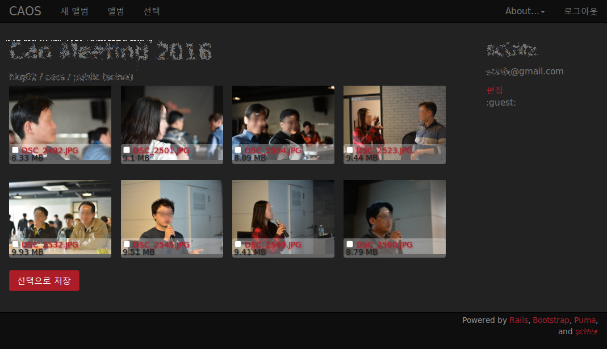
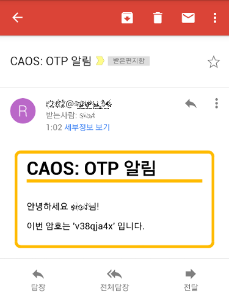
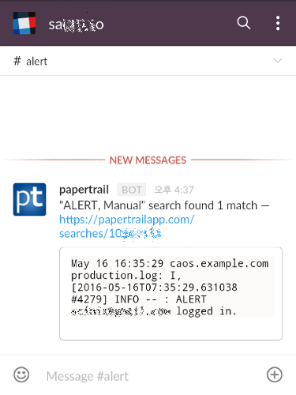

Cloud Album on Object Storage
클라우드를 활용해서 Application 개발하기
오늘의 이야기...
Cloud
이야기
잡것
as a Service
Object Storage
, 무엇에 쓰는 물건인고?
All Together Now
: CAOS 이야기
Cloud
이야기
Cloud는...
D
istant
- 내 옆에 있지 않
고
I
nstant
- 쓰
고
버리는 종이컵
F
ragile
- 종이컵이라
고
F
orget
- 쓰는 것만 신경쓰
고
Cloud는
DIFF
...
DIFF
ICULT
DIFF
ERENT
변화
는...
...언제나 어렵고 낯설다!
변화
의 바람
, 접근의
변화!
System Engineering, Software Engineering,...
세부 기술적 접근의 변화
서비스 아키텍쳐의 변화
[Site|Service]
Reliability Engineering
: 시각의 변화
IRONMAN에게 안겨 난다면...
눈을 뜨고 볼 수가 없어
변화에 끌려갈 것인가?
IRONMAN을 입으면...
자비스 안녕?
신세계!
변화를 이끌 것인가!
잡것
as a Service
Cloud 생태계, Cloud Out Sourcing
"as a Service" = "
잊고, 써라
"
무엇을 도와드릴까요?
나에게 특화된 Biz. Logic은 내가 짤게요.
메일 발송과 같은 기계적인
단순 기능
Log 저장/분석 같은 부수적
공통 기능
with a Little Help from My Friend!
공용화 가능한 기능을 "as a Service"로 제공
Social Coding:
Github
,
Bitbucket
Mailer:
Mailgun
Monitoring:
New Relic
Logging:
logentries
,
papertrail
Messanger:
Slack
,
PagerDuty
작은 일들을, 우직하게 해내는 수많은 친구들...
KISS
, Keep It Simple and Stupid!
Object Storage
무엇에 쓰는 물건인고?
등장
S3: Simple Storage Service (Amazon)
Swift: Open Source Object Storage
무엇에...?
Volume으로 잡는 Block 이런 거 아니고...
원격 Mount 하는 NFS 이런 거 아니고...
개별 파일(Object)을 API/URL로 접근
하는 스토리지
쉬운 접근, 쉬운 공유
를 제공하는 스토리지
Object Storage
정적 파일을 저장,공유하는 새로운 방식
All Together Now
: CAOS 이야기
CAOS, Cloud Album on Object Storage
CM 가서 찍은 사진을 공유하려고...
CAOS, Cloud Album on Object Storage
개발:
Ruby on Rails
, Bootstrap,
Github
운영:
SoftLayer VSI
,
Object Storage
외주:
Mailgun
,
Papertrail
,
Slack

한 번 봅시다.
OTP Mail
Mailgun

Event Alert
Papertrail and Slack

나의 노력
VSI 만들기 - 클릭
열 몇 번
실행환경 설정 - 명령
몇 번
App 개발 - Controller 전체
517 줄
+
SoftLayer Object Storage API 수정
개발과정의 기록
나머지는?
구름아, 부탁해...
이제는 우리가 헤어져야 할 시간,
다음에 또 만나요~
승부는, 곡선 구간에서 결정된다!